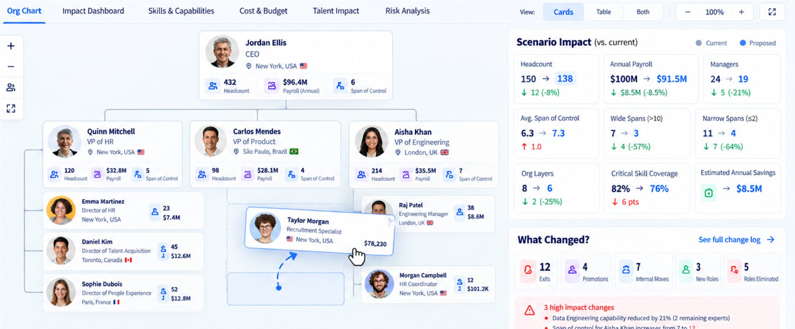
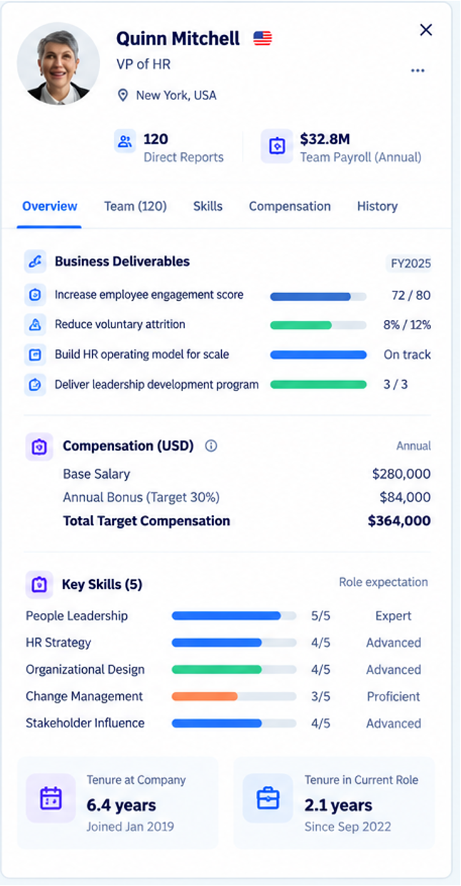

What it does
The problem: The data leaders need to build the right workforce lives in disconnected systems: strategy in presentations, people in the HRIS, budgets in Finance models, skills in learning platforms, and hiring in the ATS. Leaders define ambitious business goals but lack a single, trusted view of whether they have the capabilities, skills, structure, budget, and talent required to deliver the business outcomes.
Without connected business intelligence, fundamental questions are surprisingly hard to answer: Do we have the capabilities required to deliver our strategy? Where are our biggest workforce gaps? Is our organization structured effectively? What will our workforce plan cost? What happens if we restructure a team, move roles, invest in a new capability, or change our hiring plan?
The solution: NorthStar is a Business & Workforce Operating System that unifies a company's business intelligence across strategy, organization, skills, finance, and talent into one integrated platform. Leaders start with where the business is going, and NorthStar turns that data into decision intelligence: the capabilities, skills, structure, workforce investment, and talent strategy required to deliver business outcomes.
Core capabilities
-
✓Translate business goals and outcomes into the organizational capabilities and workforce needs required to deliver them
-
✓Visualize the organization through interactive org charts enriched with people, skills, cost, span of control, and workforce analytics
-
✓Quantify current vs. future capability and skills gaps with data, not opinion
-
✓Model future organizational structures through a drag-and-drop workforce sandbox
-
✓Measure the real-time impact of organizational changes on headcount, payroll, spans, layers, skills, capabilities, and risk
-
✓Model workforce budgets, positions, hiring plans, and financial forecasts against business targets
-
✓Compare workforce scenarios across cost, capability, structure, talent, and hiring feasibility
-
✓Understand individual and team capabilities through role-based skills analytics
-
✓Close the loop from workforce plan to positions, requisitions, sourcing, assessment, and hiring execution, and track results against the plan
-
✓Use NorthStar AI to surface risks, opportunities, scenarios, and insights across the organization's combined data
See It in Action


Business Impact
Business strategy, workforce planning, organizational design, skills, financial planning, and recruiting run on disconnected data. Leaders stitch together spreadsheets, presentations, HR systems, Finance models, and ATS reports by hand, and the answers are stale by the time they arrive.
Workforce planning becomes a headcount budgeting exercise rather than a strategic discussion about the capabilities needed to hit business goals. Organizational changes are judged on headcount and cost alone, with limited visibility into skills, capabilities, structure, talent risk, and future hiring needs.
NorthStar creates a single source of truth where executives, business leaders, Finance, People, and Talent teams plan the organization together. Business goals flow through to capabilities, skills, organization, positions, people, investment, and talent strategy, with every decision grounded in shared data.
Leaders can model decisions before making them and immediately see the impact on cost, capability, structure, and risk. The result is a different workforce-planning conversation, driven by insight rather than instinct. Not simply "How many people can we afford?" but "What organization and capabilities do we need to execute our strategy, and what is the smartest way to build them?"
Strategic Value
Connect business strategy and outcomes to organizational capability and workforce investment.
Design teams, see capability gaps, model changes, and make data-driven organizational decisions.
Connect headcount, positions, compensation, hiring forecasts, workforce scenarios, and budget.
Understand organizational structure, skills, capabilities, internal mobility, succession, and workforce risk.
Translate approved workforce plans directly into executable hiring strategies.
Create greater visibility into skills, development opportunities, career paths, and internal mobility.
Data & Integrations
NorthStar unifies the business intelligence already spread across the systems companies use, turning it into one decision-ready view.
People · Organization · Positions · Compensation
Requisitions · Candidates · Pipelines · Hiring outcomes
Budgets · Forecasts · Cost centers · Workforce investment
Skills · Proficiency · Development · Learning
Market benchmarks · Geographic differentials · Salary ranges
Goals · KPIs · Revenue · Productivity · Business outcomes